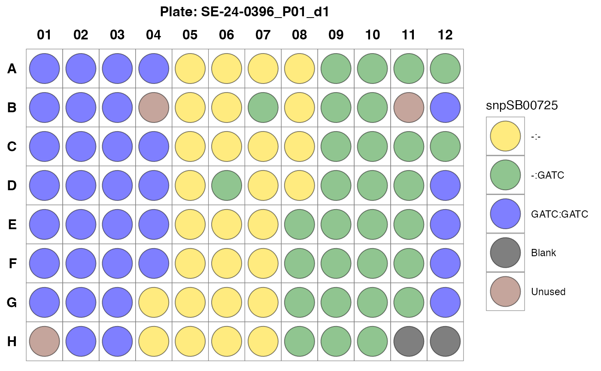

Plot kasp genotyping plate layout.
Usage
plot_plate(
x,
well = "MasterWell",
color = "Color",
geno_call = "Call",
snp_id = "SNPID",
pdf = TRUE,
width = 8,
height = 5,
filename = "plate_layout",
text_size = 12,
...
)Arguments
- x
A list object of KASP genotype calls processed by the `kasp_color()` function.
- well
A character value representing the column name for genotyping plate wells.
- color
A character value indicating the column name of assigned colors in
x.- geno_call
A character indicating the column name used for genotype
- snp_id
A character value indicating the column name for SNP IDs in
x.A logical value indicating whether to save plot as a pdf graphic
- width
A numeric value for the width of pdf device.
- height
A numeric value for the height of pdf device.
- filename
A character value for path or file name for saving pdf.
- text_size
A numeric value for text size in plot output.
- ...
Other valid arguments that can be passed to ggplot2.
Examples
# example code
library(panGenomeBreedr)
# \donttest{
# Assign KASP colors to plates
dat1 <- kasp_color(x = panGenomeBreedr::kasp_dat,
subset = 'MasterPlate',
sep = ':',
geno_call = 'Call',
uncallable = 'Uncallable',
unused = '?',
blank = 'NTC')
#> Marker in Plate SE-24-0392_P01_d2 failed! Check genotype calls.
#> Marker in Plate SE-24-0392_P01_d1 failed! Check genotype calls.
#> Marker in Plate SE-24-0395_P01_d2 failed! Check genotype calls.
#> Marker in Plate SE-24-0395_P01_d1 failed! Check genotype calls.
#> Marker in Plate SE-24-0397_P01_d2 failed! Check genotype calls.
#> Marker in Plate SE-24-0397_P01_d1 failed! Check genotype calls.
# Plot Plate 12 to see sample arrangement
plot_plate(dat1[12], pdf = FALSE)
#> $`SE-24-0396_P01_d1`

#>
# }